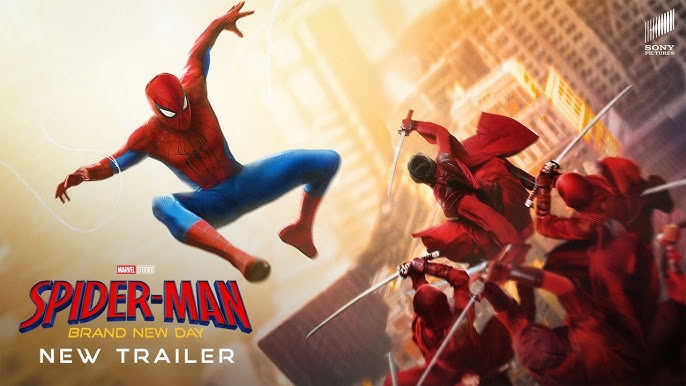

Spider-Man: Brand New Day (2026) is the highly anticipated fourth installment in Marvel Studios and Sony Pictures' MCU Spider-Man series. Directed by Destin Daniel Cretton (Shang-Chi), the movie officially breaks the previous "Home" title trilogy tradition to kick off a brand new, darker street-level saga for Peter Parker.Core Plot & SynopsisThe story picks up four years after the events of Spider-Man: No Way Home. Peter Parker is now an adult living entirely alone in New York City, completely anonymous after voluntarily erasing himself from the memories of everyone he loves.Operating as a full-time Spider-Man without a safety net, the intense physical and emotional demands of crime-fighting trigger a surprising, dangerous mutation and physical evolution that threatens his existence. Simultaneously, he must investigate a strange new wave of street crimes that introduces a powerful, unseen criminal threat to the city.